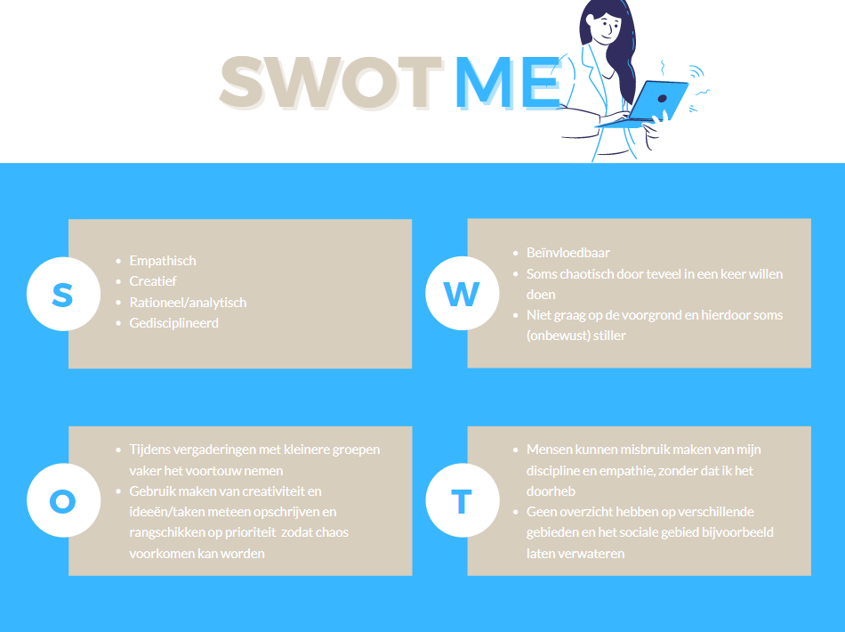

Zoals hieronder te zien is, heb ik bij dit onderdeel van Smart Start de kans gepakt om wat creatiever de compententies in te vullen.
Smart Me

SWOT-Analyse van mezelf
Persoonlijke groei
TIjdens de minor heb ik veel kunnen werken aan het behalen van de doelen die bij Smart Me zijn opgesteld. In de loop van de minor merkte ik dat nog veel meer onderwerpen op het gebied van Smart Industry mij interesseerden.
Ik wil volgend jaar een master gaan doen en op de universiteit is het doen van onderzoeken essentieel. Vandaar dat ik ook bij deze minor (naast de voorbereidingsopdrachten van Smart Start) me heb gefocust op het kennis verkrijgen over meerdere onderwerpen door het doen van onderzoek.
Het is een voordeel dat ik dat natuurlijk ook leuk vind om te doen, maar de minor heeft me ook geleerd wat voor verschillende onderdelen en manieren er zijn op het gebied van Smart Industry om te onderzoeken.
Een andere uitdaging was het inrichten van de website. Zoals ik al bij de Technology workshops had vermeld, had ik eerst een andere (simpelere) bootstrap gekozen, maar deze vond ik niet interessant en gestructureerd genoeg.
Bij deze bootstrap was veel meer mogelijk en ik vond het heel interessant om alle elementen te leren kennen, vooral van CSS en JavaScript en deze ook zelf aan te passen. Ik wil graag me blijven verdiepen in de theorie van programmeren en websites ontwikkelen, dus ben ik begonnen met een cursus volgen over Python. (via Programiz)
Ik wil daarnaast ook andere programmeertalen gaan leren en me meer verdiepen in de fundamentele beginselen om een goede website helemaal zelf te kunnen ontwerpen. Ook ben ik begonnen met lezen van boeken over Steve Wozniak zijn beginselen met electronic engineering (en uiteindelijk ook het maken van de Apple computer natuurlijk) en over Data Science.
Deze minor heeft me dus ook veel meer inzicht gegeven op het gebied van mijn interesse in technologie, die veel groter bleek te zijn dan dat ik oorspronkelijk dacht. De minor heeft me enorm geholpen met het verwezenlijken en omzetten van mijn interesse in technologie naar een motivatie om er meer over te gaan leren.
Smart Communication
Doelen
Het voornaamste communicatie doel bij het schrijven van de Smart Start artikelen was om op een duidelijke en globale wijze informatie over een bepaald onderwerp over te brengen naar de lezer van de tekst. Ik ben natuurlijk niet gespecialiseerd op het gebied van SI-technologieën en dit is dan ook de reden waarom ik wat betreft die artikelen eroor gekozen heb om niet te diep in te gaan op bepaalde onderwerpen. Een ander communicatie doel voor de minor was om op hetzelfde niveau als de opdrachtgever van het project te zitten, dus begrijpen waar diegene (in dit geval dus Jeroen Broekhuijsen) het over heeft en hierover in gesprek kunnen gaan. Dit was op het begin redelijk lastig, maar naarmate ik meer begon te leren over Digital Twins en andere digitale innovaties, merkte ik dat ik makkelijker kon praten over datgene waar we het over hadden tijdens de wekelijkse vergaderingen. Een doel dat daarbij komt, is het duidelijk uitleggen aan klasgenoten, docenten en MKB'ers wat we voor het project allemaal doen.
Effectiviteit
Succesfactoren
PCDA-cyclus
Reflectie
De minor was een erg interessant half jaar om meer te leren over Smart Industry, maar ook mezelf. Zoals hierboven al staat aangegeven, ben ik erachter gekomen dat ik graag mijn technologische kennis en vaardigheden wil blijven uitbreiden. Hier ga ik de komende jaren dan ook mee aan de slag. De docenten van de minor zijn elk heel gepassioneerd op hun vakgebied, dat zorgt voor nog meer motivatie tijdens de lessen, zelfs in deze corona periode.